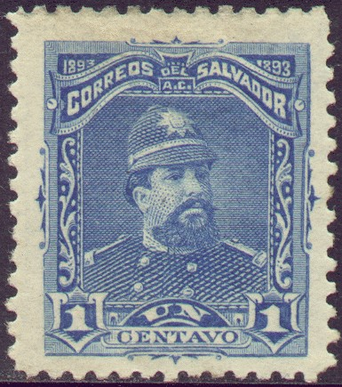
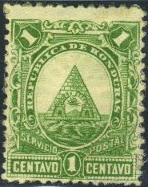
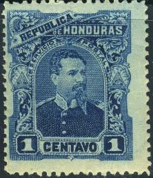

{kind=link}



Return To Catalogue - El Salvador - Nicaragua - Honduras - Ecuador
Note: on my website many of the
pictures can not be seen! They are of course present in the
catalogue;
contact me if you want to purchase the catalogue.
Seebeck (or actually the printing firm of Hamilton) printed stamps for free for several countries in Latin America (El Salvador, Nicaragua, Honduras and Ecuador), which were then reprinted by him after the stamps were no longer valid in large quantities. These reprints are almost impossible to distinguish from the original stamps and they also exist with forged cancels. Remainders from these countries also had to be send back to Seebeck after the stamps became invalid. In 1889 Seebeck went to Latin America and proposed this contract of 10 years to several countries. After the stamps became invalid, Seebeck sold them on the philatelic market.
Due to the large amount of reprints and remainders, these stamps are even today, relatively abundant. Collectors at the time largely condemned his business practice and collecting those countries became impopular for a while.
The next countries issued these Seebeck stamps (source: http://www.linns.com/howto/refresher/seebeck_20050613/refreshercourse.asp?uID= ). I reproduce from this website:
El Salvador: From 1890 to 1899, Hamilton produced for El Salvador 166 postage stamps, 152 Official stamps, 56 postage due stamps, five parcel post stamps, two acknowledgement of receipt stamps, and four registered mail stamps. In addition to postage stamps, Seebeck and Hamilton also produced Salvadoran postal stationery, including 100 envelopes, 32 wrappers and 39 postal cards.
Examples of Seebeck stamps of El Salvador:
Nicaragua: Under the Seebeck contract, Nicaragua issued 128 postage stamps, 139 Official stamps, 41 postage due stamps and 66 telegraph stamps.
Examples of stamps printed by Seebeck of Nicaragua:
Honduras: Not all
Seebecks were printed by Hamilton. As a condition of his contract
with the Honduran government, Seebeck was to receive the
remainders of the previous stamp issue of 1878, which had been
printed by the National Bank Note Co.
Seebeck judged that the remainders of this issue were
insufficient for his needs, so when he returned to New York in
1889, he persuaded the Honduran consul to have another printing
made at his expense. The new printing of the 1878 issue was done
by the American Bank Note Co, which had absorbed National in
1879. The stamps were shipped to Honduras, where they were turned
over to Seebeck's agent and shipped back to New York.
The first new Honduran stamps produced by Seebeck were issued
Jan. 6, 1890.
Honduras issued the fewest Seebeck stamps of any of the
contracting countries. In all, it issued 49 postage stamps and 22
Official stamps.
The Official stamps were never placed in use. In postal
stationery, Seebeck produced 18 envelopes, 16 wrappers and 16
postal cards for Honduras.
On Oct. 26, 1893, Honduras withdrew from the compact with
Seebeck, the first country to do so. The Gen. Trinidad Cabanas
issue of August 1893 was the last Seebeck issue for Honduras.
Examples of Seebeck stamps of Honduras:


Ecuador: From 1892 to 1896, Seebecks printed a total of 40 postage stamps, 37 Official stamps 14 postage due stamps and 43 telegraph stamps for Ecuador. Seebeck also produced 14 revenue stamps in two sets for Ecuador in 1893-95. Seebeck's postal stationery output for Ecuador was 12 envelopes, two wrappers and six postal cards.
Examples of Seebeck stamps of Ecuador:
{kind=link}
{kind=link}